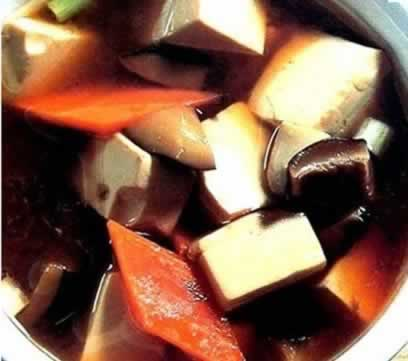

吃豆制品促进宝宝脑发育
怀孕期间多吃豆类与豆制品利于胎宝宝的发育，因为豆类富含优质蛋白与脂类（脑中极为重要的营养物质谷氨酸、天冬氨酸、赖氨酸、精氨酸在大豆中的含量是米中含量的6倍之多），还含有大量的钙与维生素B，利于胎宝宝大脑与神经系统的发育。根据营养成分与含量，豆类可分为两大类，一类为大豆（黄豆）、黑豆与青豆；另一类包括豌豆、蚕豆、绿豆、豇豆、小豆与芸豆等。在食用这些豆类时，一定要加热煮熟，以免豆子中固有的抗营养物质（对抗人体吸收营养元素的成分）对人体造成不良影响。
在孕晚期，准妈妈还可以定期喝一些绿豆汤，这可以帮助清除“胎毒”（即内热，一般认为新生儿湿疹等皮肤炎症与胎毒有关）。同时，绿豆汤还可解暑，如果加一些红豆与大枣，还有补气养血的作用，孕晚期的准妈妈可以每周食用一次。
本周推荐尝试食谱1：
鱼头豆腐汤推荐理由：鱼头与豆腐都含健脑物质，可健脑益智，对胎儿大脑发育有益。
食谱原料：
胖头鱼鱼头1个(约600克)，豆腐200克，枸杞20克，盐、料酒、姜丝、葱段、清汤(或水)各适量。
制作方法：
1、将胖头鱼鱼头去鳞和鳃，洗净，剁成两半或小块；豆腐切成块;枸杞用水泡透；
2、锅中热油爆香葱段，再放入胖头鱼鱼头炒几分钟，加入料酒去腥，然后加入清汤用小火煎烧，加入姜丝，用大火熬煮；
3、熬煮至汤呈乳白色时，加入豆腐、枸杞和盐，继续煮5分钟即可食用。
本周土建尝试食谱2：
蘑菇炖豆腐
推荐理由：此菜含蛋白质、脂肪、糖、钙、磷、铁、锌、铜等，营养全面味道可口。
食谱原料：
嫩豆腐500克，鲜蘑菇50克，熟竹笋片25克，素汤汁适量，酱油10克，香油25克，精盐适量。
制作方法：
1、将嫩豆腐切成约2厘米见方的小块，用沸水焯后，捞出待用。注意时间不宜长，火开后立即捞出，以免老化。
2、把鲜蘑菇削去根部，洗净，放入沸水中焯1分钟，捞出，用清水漂凉，切成片。
3、在沙锅内放入豆腐、笋片、鲜蘑菇片、盐和素汤汁(浸没豆腐为准)，用中火烧沸后，移至小火上炖约12分钟，加入酱油，淋上香油即成。